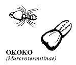

THE COMPLETE FRENULUM STUDIES
Part One:
 Introduction
(Grewel) Introduction
(Grewel)
Basic
Human Studies
Part Two:
Modern
Treatment (Z plasty etc.)
Ancient
treatment (Bryk, Luo Rites)
The
Animal Studies
________
PART TWO
Ancient Treatment
Bryk speculates on the origin of the traditional
operation however he misunderstood the frenulum.
|
Felix Bryk
Die Beschneidung bei Mann und Weib - (German
text)
Circumcision among Men and Women
Gustav Feller. New Brandenburg. (1931) p.175 - 6 |
"In the case of a short frenulum, by which the glans of the penis is
drawn crooked during erection, emission is made difficult"
"The boy ... experiences a disappointement, he thought the foreskin
...would retract further and notices now that the frenulum ... stops
any further retraction. The idea occurs to him to cut through the frenulum.
Perhaps as well he had previously heard from his fellow sufferers that
due to its shortness it can sometimes rips during the sexual act.
The Kayapo wear a cap, which they fasten onto the prepuce, after they
have cut through the frenulum with a taqua splinter. (Kissenberth after
Koch, p.110).
In the literature, cases of severing of the frenulum are known to me
among the inhabitants of the Loyalty Islands (Sarasin) and, as just
mentioned, among the Tahitians."
The Luo of East Africa receive
top marks for cultural enterprise and a creative approach in treatment
for "The Onduong".
"Okoko Method (Soldier Ant Method)
|  |
The Okoko is the male soldier ant. ... The Okoko would
then be caught and its incisor like proboscis placed squarely on the
connective tissue that joins the penial foreskin to the male organ.
The Okoko would then tighten grip to sever through the connective tissue
... the Okoko could cling to the connective tissue and take its time
about severing it." |
"The Wino Method (Flywhisk Method)
In this flywhisk strand method, the operation procedure involved the
presence of a thorn known as Kuth Alak Tar and one long strand from
a flywhisk called Wino. ... The thorn is first used to pierce through
the connective tissue joining the foreskin to the male organ. As the
thorn pierces further, blood drips from the mutilated part. The Wino
is then passed through the opening made by the thorn, and knotted tightly
round the circumference of the tissue. ... "
"The knotted strand would slowly cut through the tissue overnight
after two days, or more, depending on the individuals.... unmelted
animal ghee known as Mor-Dhiang' is applied to the connective tissue
as long as it is knotted. The application of this ghee is thought to
act as the modern petroleum jelly substitute, to render the connective
tissue soft to accelerate the severing process of the knotted flywhisk
strand."
"The Opila Method (Sugarcane Rind Method)
In some different parts of Luoland, the sheath-like cover of the millet
stalk was widely preferred to than that of sugar cane. ... In the Opila
method the thorn Kuth Alaktar was first used to pierce through the
connective tissue of the male organ. But before the thorn could be
pulled out, the sharp blade is used to incise through up to the thorn.
The thorn was therefore an anvil on which the blade of the Opila stopped
in order to avoid hideous mutilation of the male organ."
"Tuchruok Method (The Piercing Method)
In both the Wino and the Opila methods, the thorn was used in preparation
while in the Tuchruok method, it is the only tool used. ... The thorn
is used to pierce through the Onduong. Since the hind part of the thorn
is generally larger than the fore part, the sharp part is pushed further,
thereby widening the 'opening'. The widening process continues until
the Onduong is finally severed."
One usefulness of this custom is clearly
"... During the Ndaria girls from the nearly married girl's (Miaha)
village arrives at the home where the Miaha is married. This was for
the purpose of witnessing the Ndaria and also to return back with one
of the bloody beddings as evidence of the Miaha's freshness and virginity.
During this occasion, the hymen of the virgin is broken."
"In this case, if Ridhruok and the other methods were not observed
by the man, the narrow hymen of the girl performs the act. This causes
the bleeding of both the man and the girl, which is diametrically opposed
to the purpose of the Ndaria which sought to prove the virginity of
the new wife, but not the uncircumcised condition of the husband. For
the husband to prove that he too was uncircumcised on the bridal bed
was a stigma that could stick on his personality for the rest of his
life."
"Such accidents have been known to break the Onduong by force during
the breaking of the virginity."

|